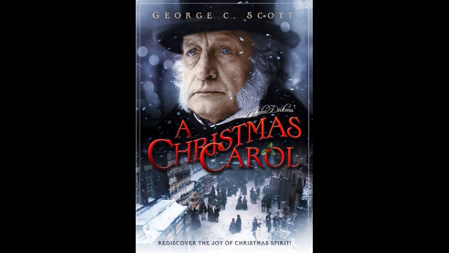

1984

CAST
Ebenezer Scrooge
-
George C. Scott
Bob Cratchit
-
David Warner
Mrs. Cratchit
-
Susannah York
Tiny Tim Cratchit
-
Anthony Walters
Fred (Scrooge's nephew)
-
Roger Rees
Janet Hollywell
-
Caroline Langrishe
Belle (Scrooge's unappreciated fiancée)
-
Lucy Gutteridge
Silas Scrooge (Ebenezer and Fan's cruel father)
-
Nigel Davenport
Marley's Ghost
-
Frank Finlay
Spirit of Christmas Past
-
Angela Pleasence
Spirit of Christmas Present
-
Edward Woodward
Spirit of Christmas Future
-
Michael Carter
Young Scrooge
-
Mark Strickson
Fan "Fanny" Scrooge
-
Joanne Whalley
Mr. Fezziwig
-
Timothy Bateson
Mr. Poole
-
Michael Gough
Mr. Hacking
-
John Quarmby
Old Joe
-
Peter Woodthorpe
Mrs. Dilber
-
Liz Smith
Tipton
-
John Sharp
Pemberton
-
Derek Francis
Forbush
-
Danny Davies
Ben
-
Brian Pettifer
Meg
-
Catherine Hall
Kate
-
Cathryn Harrison
CREATIVE TEAM
Director
-
Clive Donner
Screenplay
-
Roger O. Hirson
PRODUCTION
The movie was filmed on location in Shrewsbury, Shropshire. It originally aired on the American television network CBS on 17 December 1984, and was released theatrically in Great Britain. The U.S. debut was sponsored by IBM, which purchased all of the commercial spots for the two-hour premiere. The film was marketed with the tagline "A new powerful presentation of the most loved ghost story of all time!" Scott was nominated for an Emmy for Outstanding Lead Actor in a Limited Series or a Special for his portrayal of Scrooge.